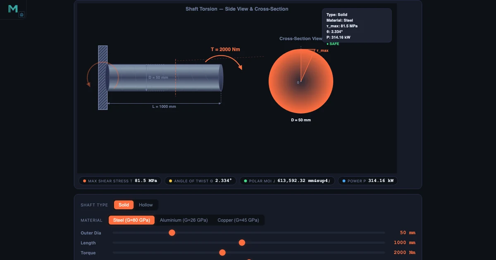
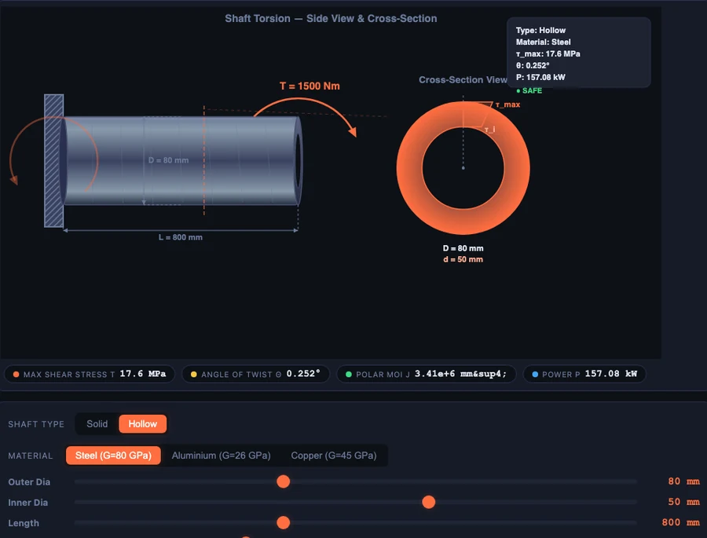

Shaft Torsion Formula — Shear Stress, Angle of Twist, and Why Hollow Shafts Win

- The shaft torsion formula is T/J = τ/r = Gθ/L, linking applied torque T, polar moment of inertia J, shear stress τ at radius r, shear modulus G, angle of twist θ, and length L.
- Maximum shear stress occurs at the outer surface: τ_max = T × (D/2) / J, and the angle of twist is θ = T × L / (G × J).
- For a solid shaft J = πD&sup4;/32, so J scales with the fourth power of diameter — doubling D increases J by 16×, making diameter the dominant design variable.
A circular shaft under torsion is one of the cleanest examples of a single formula doing a lot of heavy lifting. The torsion formula — \(\dfrac{T}{J} = \dfrac{\tau}{r} = \dfrac{G\theta}{L}\) — gives you maximum shear stress, angle of twist, and the basis for every shaft design decision in mechanical engineering. The maths isn’t especially difficult. What trips students up is understanding why shear stress is zero at the centre, why diameter matters so much more than torque, and why removing the core of a shaft actually makes it more efficient. Those are the ideas this article works through.
Why the Torsion Formula Confuses Students
Here’s a scene that plays out in every strength-of-materials class. Students see the formula, write it down, and can substitute numbers into it. They can calculate τ_max for a given torque and diameter. But ask them why the stress is zero at the shaft centre, and you get silence. Ask why a hollow shaft is better, and you get a guess about weight.
The confusion comes from treating the formula as a number machine rather than as a physical description of what’s actually happening inside the material. Shear stress in a shaft under torsion isn’t uniform — it’s a gradient. Zero at the axis. Maximum at the surface. That linear distribution is the whole reason hollow shafts work, and it’s the whole reason J (the polar moment of inertia) appears in the formula at all. Once students see that distribution animated, something clicks.
The other common problem is the units. Torque in Nm, dimensions in mm, stress in MPa — it’s easy to drop a factor of 1000 somewhere. The simulator handles the conversion, so students can focus on the physics instead of the arithmetic.
The Torsion Formula Unpacked: T/J = τ/r = Gθ/L
The full torsion equation is actually three ratios set equal to each other:
\[\dfrac{T}{J} = \dfrac{\tau}{r} = \dfrac{G\,\theta}{L}\]
Each term has a clear physical meaning. T is the applied torque in N·mm. J is the polar moment of inertia in mm&sup4; — a measure of how the cross-section resists twisting. τ is the shear stress at radius r from the shaft centre. G is the shear modulus of the material (80 000 MPa for steel, 26 000 MPa for aluminium). θ is the angle of twist in radians, and L is the shaft length in mm.
For maximum shear stress you use r = D/2 at the outer surface. That gives you the design equation directly:
\[\tau_{\max} = \dfrac{T \cdot (D/2)}{J}\]
And the angle of twist comes from the right-hand side of the full equation:
\[\theta = \dfrac{T \cdot L}{G \cdot J}\]
The hero image shows the drive-shaft preset: D = 50 mm solid steel shaft, T = 2000 Nm, L = 1000 mm. Substituting: J = π×50&sup4;/32 = 613 592 mm&sup4;, so τ_max = 2 000 000 × 25 / 613 592 = 81.49 MPa. The angle of twist is 2.334°. Those are the numbers the simulator shows in the readout panel, and you can verify every one of them with a calculator.
Polar Moment of Inertia — Why J Matters So Much
J is not the same as the second moment of area used in beam bending. It’s the polar second moment of area — it accounts for the full circular cross-section twisting about its own axis. For a solid circular shaft:
\[J = \dfrac{\pi D^4}{32}\]
The fourth-power relationship is the critical insight. Double the shaft diameter and J increases by a factor of 16. That means for the same applied torque, the maximum shear stress drops to 1/16 of what it was — roughly speaking. In practice, the radius r also doubles (going up by 2), so the net shear stress effect is a factor of 8 reduction. Still dramatic. This is why shaft diameter is the dominant design variable in torsion, far more influential than material choice or shaft length.
For a hollow shaft the formula just subtracts the inner core:
\[J = \dfrac{\pi\!\left(D_o^4 - D_i^4\right)}{32}\]
The simulator’s Explore tab has a polar MOI concept card with a worked example you can step through. It’s worth spending five minutes there before setting students loose on design problems.
Solid vs Hollow Shaft — The Numbers Tell the Story

The hollow-axle preset in the body image makes the comparison concrete. The hollow steel shaft has OD = 80 mm, ID = 50 mm, and carries T = 1500 Nm. Its polar moment of inertia is J = π(80&sup4; − 50&sup4;)/32 = 3 407 919 mm&sup4;, giving τ_max = 17.60 MPa and θ = 0.252°. Those are small, comfortable numbers.
Now compare that to a solid 80 mm shaft. Its J is π×80&sup4;/32 = 4 021 239 mm&sup4; — about 18% more than the hollow version. But its cross-sectional area is OD² − ID² = 80² − 50² = 3900 mm² compared to 5024 mm² for the solid. The hollow shaft carries 85% of the solid shaft’s torsional stiffness at only 61% of the weight. That’s the deal. And it gets better as the hollowness ratio (D_i/D_o) increases, up to a practical limit of about 0.7 or 0.8 before buckling becomes a concern.
This is why propeller shafts, drive shafts, and axles in vehicles are hollow. It’s not just about reducing weight — it’s about achieving a higher strength-to-weight ratio because the material that was removed (the central core) was barely doing anything anyway.
Solid shafts
Still the right choice where simplicity and manufacturing cost matter more than weight. Small motor shafts (the motor-shaft preset: D = 25 mm, T = 100 Nm) and gearbox input shafts are typically solid. Machining a hollow bore isn’t worthwhile when the shaft is short and light already.
Hollow shafts
Preferred wherever the shaft is long, rotates at speed, or contributes significant mass to a spinning assembly. The propeller-shaft preset (aluminium, OD = 100 mm, ID = 70 mm, L = 1500 mm) shows a long lightweight shaft where both the aluminium material and the hollow section reduce the polar inertia of the rotating system — which matters for dynamic performance.
Power Transmission — Linking Kilowatts to Shaft Diameter
In practice you rarely start with a torque value. You start with a power requirement and a shaft speed. The connection is:
\[P = \dfrac{2\pi N T}{60}\]
Rearranged for torque: \(T = \dfrac{P \times 60}{2\pi N}\). That’s the calculation students need to do before they can even begin a shaft design problem. The drive-shaft preset illustrates it directly: 2000 Nm at 1500 rpm gives P = 314.16 kW. That’s a lot of power. A factory might use a shaft like that between a motor and a large gearbox.
Here’s the classroom insight that always lands well. A motor running at 2800 rpm and delivering 50 kW produces T = 50 000×60/(2π×2800) = 170 Nm. A conveyor gearbox output at 300 rpm delivering the same 50 kW produces T = 50 000×60/(2π×300) = 1592 Nm. Same power. Almost ten times the torque. The output shaft needs to be dramatically larger — not because the gearbox is inefficient, but because low speed means high torque for the same power. Students grasp this much faster when they can type the numbers into the simulator and see the diameter readout change.
Using the Simulator in a Lesson
Warm-up (5 min). Open the Drive Shaft preset. Read τ_max off the panel (81.49 MPa). Ask students to verify it by hand using T/J×r. Most will get close but at least one will have a units error. That discussion is worth the five minutes.
Core demonstration (15 min). Switch to Hollow Axle and compare the shear stress and angle of twist with an equivalent solid shaft. Walk through the J formula for both. Challenge students to find the hollowness ratio D_i/D_o that retains at least 80% of the solid shaft’s J — the answer is around 0.66, which they can verify by adjusting the inner diameter slider.
Power calculation exercise (10 min). Give a power and speed (e.g., 75 kW at 960 rpm). Ask students to calculate the required torque, then find the minimum shaft diameter for an allowable shear stress of 50 MPa. The design formula D = (16T / πτ_allow)¹⁄₃ gives them the starting point, and the simulator lets them confirm the answer.
Bridge to Mohr’s Circle (5 min). Torsional shear stress on its own gives you τ_max on the shaft surface. But in reality shafts often carry bending moments at the same time, so the critical point is under combined normal and shear stress. That’s when Mohr’s Circle becomes the next tool — transform the combined stress state to find the true principal stresses.
Try It Yourself
All tools below are free — no account, no download. Open them in a browser and start experimenting.
Key Takeaways
- The torsion formula \(\dfrac{T}{J} = \dfrac{\tau}{r} = \dfrac{G\theta}{L}\) links applied torque, cross-section geometry, material, and twist in a single relationship.
- Shear stress is zero at the shaft centre and maximum at the outer surface — this linear distribution is what makes hollow shafts efficient.
- \(J\) depends on the fourth power of diameter: doubling \(D\) increases \(J\) by 16×, making diameter by far the most influential shaft design variable.
- A hollow shaft with \(D_i/D_o \approx 0.6\) retains about 85% of the solid shaft’s polar MOI at roughly 64% of the weight — a much better strength-to-weight ratio.
- Power, torque, and speed are linked by \(P = 2\pi NT/60\). Low-speed output shafts carry far more torque than high-speed input shafts at the same power.
- Torsion problems in real machinery rarely occur in isolation — combined bending and torsion require a Mohr’s Circle analysis to find the true maximum stress.
Frequently Asked Questions
What is the torsion formula for a shaft?
The torsion formula is T/J = τ/r = Gθ/L, where T is the applied torque, J is the polar moment of inertia, τ is the shear stress at radius r, G is the shear modulus of the material, θ is the angle of twist, and L is the shaft length. For a solid circular shaft, maximum shear stress is τ_max = T × (D/2) / J.
Where does maximum shear stress occur in a shaft under torsion?
Maximum shear stress occurs at the outer surface of the shaft, at radius r = D/2. Shear stress varies linearly from zero at the centre to its maximum at the outermost fibre. This is why material at the centre of a solid shaft contributes very little to torsional strength.
Why is a hollow shaft more efficient than a solid shaft?
A hollow shaft removes material from the centre where shear stress is near zero, so you lose very little torsional strength. For example, a hollow steel shaft with OD=80mm and ID=50mm retains about 85% of the polar moment of inertia of a solid 80mm shaft, while weighing only 61% as much. The strength-to-weight ratio is always better for a hollow shaft.
What is the polar moment of inertia and how is it calculated?
The polar moment of inertia J measures a cross-section's resistance to twisting. For a solid circular shaft, J = π D⁴ / 32. For a hollow shaft, J = π (D_o⁴ − D_i⁴) / 32. Because J depends on the fourth power of diameter, doubling the diameter increases J by a factor of 16 — making shaft diameter the single most powerful design variable in torsion.
How do you calculate the angle of twist for a shaft?
The angle of twist is θ = T × L / (G × J), where T is the torque in N·mm, L is the shaft length in mm, G is the shear modulus in MPa, and J is the polar moment of inertia in mm⁴. The result is in radians; multiply by 180/π to convert to degrees. A longer shaft or softer material (lower G) produces a larger angle of twist for the same applied torque.
The torsion formula is short enough to fit on a sticky note, but the insight behind it — that stress is a gradient, that geometry dominates over material, that hollow is almost always smarter than solid — takes time to build. A simulator that lets students adjust one variable at a time and see every readout respond instantly compresses that learning time considerably.
Open the Shaft Torsion Simulator and work through all four presets. By the end you’ll have a clear picture of why propeller shafts are hollow, why motor shafts are thin, and why a gearbox output shaft is always the thickest shaft in the assembly.